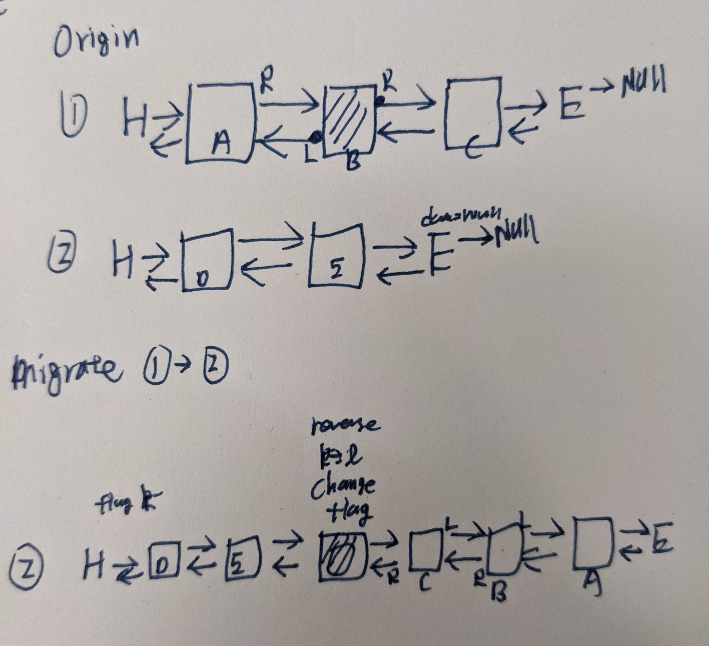
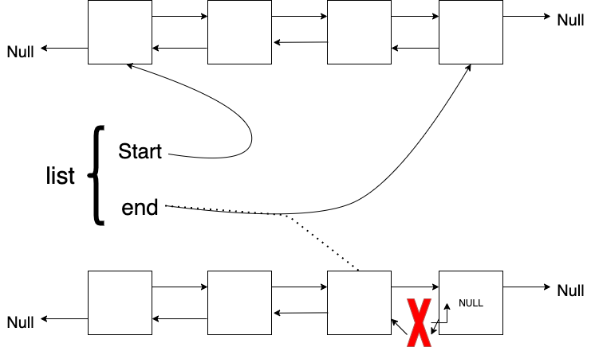

Double Linked List: List migration
Requirement
- Time limit: 1s
- Mem Limit: 65536 KB
Constraint
- n of cargos: max 10e6
- k of lines: 10e3
- l is the index: [0,10e4]
Printout
- print logs from 0-(k-1) lines
- skip null line
Plan

- Reader
- Parse a string
- Parse an int
- Parse an int
- Terminate for EOF
Implementation of Double linked list

https://gist.github.com/mycodeschool/7429492
List
Array of lists
list[1000]
node
Read a list
function read(list)
if list.start != NULL { # 至少有一個
iter_read(first_node)
}
else { # 空集合
return 0
}
end
function iter_read(node){
flag = get_node_ptr_from_terminal(node) # 得到下個 node 的方向
print(node)
if (flag== -1){ #兩邊都是 NULL
return 0
}
ptr_pre = &node # 第一個 node 的位置
while(node.neighbor[flag] != NULL){ # terminate at NULL
# move to new node
node = node.neihbor[flag]
# Print
print(node)
# Update direction
if (node.neighbor[flag] == ptr_pre){ # case: turn back
flag = flag^1
}
# Move
ptr_pre = &node
}
}
function get_node_ptr_from_terminal(node){
left = node.neigbhor[0]
right = node.neighbor[1]
if left==NULL and right == NULL
return -1
if left != NULL and right == NULL
return 0
if left == NULL and right != NULL
return 1
if left != NULL and right != NULL
return Error
}
Enter

- Pointers
- End node
NULLtonew node
- new node
- one -> End node
- the other ->
NULL
- End node
function EnterLine(list, new_node)
if list.end == NULL { # Enter an empty line
list.start = &new_node
list.end = &new_node
}
end_flag = get_NULL_from_terminal(list.end)
# Pointer Assignment
list.end.neighbor[end_flag] = &new_node
new_node.neighbor[end_flag] = NULL
new_node.neighbor[end_flag^1] = list.end
# Update END
list.end = &new_node
end
function get_NULL_from_terminal(node){
left = node.neigbhor[0]
right = node.neighbor[1]
if left==NULL and right == NULL
return 2
if left != NULL and right == NULL
return 1
if left == NULL and right != NULL
return 0
if left != NULL and right != NULL
return -1
}
Migrate

function migrate(list src, list dst){
# Locate ends
end_src = src.end
end_dst = dst.end
# Get flag
src_flag = get_NULL_from_terminal(end_src)
dst_flag = get_NULL_from_terminal(end_dst)
# Bridging
end_src.neighbor[src_flag] = end_dst
end_dst.negihbor[dst_flag] = end_src
# Relocate the terminals
dst.end = src.start
# Clean up src
src.start = NULL
src.end = NULL
}
Leave

function leave(list){
end_node = list.end
flag = get_node_ptr_from_terminal(end_node)
prev_node = end_node.neighbor[flag]
list.end = prev_node
kill(end_node)
}
Memory
- Node
- 1 x
int: 4 byte - 2 x
pointer: 8 bytpe - Sum: 20 byte
- 10e6 nodes:
- 20 MB
- 1 x
{kind=link}
{kind=link}
{kind=link}
{kind=link}